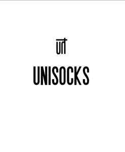

Trade Mark Journal No.2025/014 4 April 2025
UK00004150154 20 January 2025 (25)

- Class 25
- Headbands [clothing]; Gloves [clothing]; Hoods [clothing]; Beach clothing; Mitts [clothing]; Lingerie; Maternity lingerie; Bodices [lingerie]; Underwear; Undergarments; Jockstraps [underwear]; Teddies [undergarments]; Maternity underwear; Underwear for women; Maillots [hosiery]; Nightwear; Hosiery; Swimwear; Negligees; Panties; Corsets [underclothing]; Shapewear; Sweat-absorbent underclothing [underwear]; Strapless bras; Bra straps [parts of clothing]; Bras; Briefs [underwear]; Strapless brassieres; Pantyhose; Teddies [underclothing]; Men's underwear; Sleepwear; Underclothes; Knitted underwear; Bridal garters; Bandeaux [clothing]; Underwear (Anti-sweat -); Anti-sweat underwear; Bikinis; Maternity sleepwear; Corsets [clothing, foundation garments]; Stockings; Slips [undergarments]; Silk clothing; Body stockings; Sweat-absorbent underwear; Underclothing; Disposable underwear; Camisoles; Corsets [foundation clothing]; Corsets being foundation clothing; Underclothing for women; Nightgowns; Bra straps; Brassieres; Women's underwear; Bralettes; Playsuits [clothing]; Nipple pasties being underclothing; Straps for bras; Bustiers; Swimsuits; Beachwear; Knitwear [clothing]; Peignoirs; Fitted swimming costumes with bra cups; Functional underwear; Babies' pants [underwear]; Nighties; Ladies' underwear; Shorts [clothing]; Loungewear; Nursing bras; Thong sandals; Babies' undergarments; Thermal underwear; Stockings (Sweat-absorbent -); Sweat-absorbent stockings; Stockings [sweat-absorbent]; Cashmere clothing; Slips [underclothing]; Girdles [corsets]; Chemises; Underclothing (Anti-sweat -); Anti-sweat underclothing; Boy shorts [underwear]; Corsets; Headbands for clothing; Linen clothing; Bathing costumes for women; Sports bras; Underpants; Long underwear; Nappy pants [clothing]; Bottoms [clothing]; Underpants for babies; Jogging bottoms [clothing]; Thongs; Clothing; Leggings [trousers]; Gloves as clothing; Pajamas; Trouser socks; Undershirts; Socks and stockings; Sweat-absorbent underclothing; Pyjamas; Braces for clothing [suspenders]; Anti-perspirant socks; Tops [clothing]; Beach clothes; Slips [clothing]; Sweat-absorbent socks; Bed socks; Sweatpants; Aprons [clothing]; Womens' undergarments; Yoga pants; Scarves; Cashmere scarves; Scarfs; Neck scarves; Silk scarves; Snoods [scarves]; Shoulder scarves; Neck scarves [mufflers]; Mufflers [neck scarves]; Mufflers as neck scarves; Neck tube scarves; Neck scarfs [mufflers]; Beanie hats; Shawls; Knitted gloves; Shawls and stoles; Mittens; Men's dress socks; Beanies; Bobble hats; Woollen socks; Knitted caps; Knitted baby shoes; Berets; Bandanas [neckerchiefs]; Fashion hats; Beach hats; Leather headwear; Sock suspenders; Ushankas [fur hats]; Ascots; Shawls [from tricot only]; Shawls and headscarves; Swim wear for children; Sports wear; Swim wear for gentlemen and ladies; Casual clothing; Slippers; Bath slippers; Dance slippers; Pedicure slippers; Ballet slippers; Leather slippers; Foam pedicure slippers; Plastic slippers; Slipper socks; Slipper soles; Beach shoes; Wooden shoes [footwear]; Bootees (woollen baby shoes); Baby doll pyjamas; Inner socks for footwear; Insoles for shoes and boots; Insoles [for shoes and boots]; Housecoats; Bath robes; Socks; Yoga socks; Footless socks; Socks for men; Non-slip socks; Anklets [socks]; Ankle socks; Water socks; Toe socks; Thermal socks; Sports socks; Tennis socks; Men's socks; Pop socks; Socks for infants and toddlers; American football socks; Japanese style socks (tabi); Japanese style socks (tabi covers); Knee-high stockings; Esparto shoes or sandles; Tongues for shoes and boots; Pullstraps for shoes and boots; Slip-on shoes; Stockings (Heel pieces for -); Heel pieces for stockings; Insoles for footwear; Heel protectors for shoes; Footless tights; Fingerless gloves as clothing; Turtleneck shirts; Shirts; Dress shirts; Short-sleeve shirts; Short-sleeved shirts; Long-sleeved shirts; Sweat shirts; Open-necked shirts; Polo shirts; Knit shirts; Collared shirts; Sleep shirts; Short-sleeved T-shirts; Hooded sweat shirts; Button-front aloha shirts; Night shirts; Shirts and slips; Woven shirts; Button down shirts; T-shirts; Yoga shirts; Casual shirts; Fishing shirts; Sports shirts with short sleeves; Tee-shirts; Pyjamas [from tricot only]; Shorts; Trousers shorts; Bermuda shorts; Bib shorts; Boxer shorts; Swim shorts; Fleece shorts; Cycling shorts; Sweat shorts; Boxing shorts; Gym shorts; Tennis shorts; Walking shorts; Maternity shorts; Golf shorts; Sliding shorts; Board shorts; Pants; Capri pants; Short trousers; Padded shorts for athletic use; Trousers; Cycling pants; Warm-up pants; Dress pants; Jogging pants; Stretch pants; Skorts; Sports pants; Moisture-wicking sports pants; Cargo pants; Bib tights; Weatherproof pants; Sweat pants; Pajama bottoms; Tights; Sweatshorts; Boardshorts; Tracksuit bottoms; Slacks; Swim briefs; Athletic tights; Babies' pants [clothing]; Casual trousers; Sleeveless pullovers; Boxer briefs; Track pants; Sandals and beach shoes; Sports shirts; Linen (Body -) [garments]; Body linen [garments]; One-piece playsuits; Bodysuits; Halter tops; Chemise tops; Gymwear; V-neck sweaters; Leggings [leg warmers]; Tracksuit tops; Bra strap extenders; Sundresses; Maillots; Jumpsuits; Knit tops; Blouses; Pleated skirts; Maternity tops; Moisture-wicking sports bras; Turtleneck sweaters.
UNISOCKS LTD